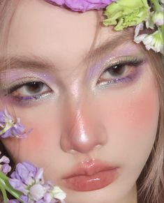

Ethereal Makeup Archetype

Face:
- Luminous Foundation: Creates a radiant, dewy base for a natural ethereal look. Explore
- Dewy Finish Primer: Provides a smooth canvas for makeup application and enhances the dewy effect. Explore
- Lightweight Foundation: Offers sheer to medium coverage for a natural look. Explore
- Radiant Primer: Creates a subtle glow and evens skin tone. Explore
- Soft Contour: Defines facial features with a light touch, avoiding harsh lines. Explore
- Peachy Blush: Adds a natural flush of color to the cheeks. Explore
- Highlighting Powder: Provides a subtle, ethereal glow to the high points of the face. Explore
Eyes:
- Shimmery Eyeshadow (Neutral Tones): Rose gold, pink, champagne shades for a soft and ethereal look. Explore
- Soft Eyeliner (Brown/Charcoal): Defines the eyes without overpowering the ethereal feel. Explore
- Lengthening Mascara: Enhances lashes without adding too much volume for a natural look. Explore
- Wispy Lashes (Optional): Adds a touch of drama with a feathery, ethereal appearance. Explore
Lips:
- Glossy Lipstick: Adds shine and dimension to lips for a natural effect. Explore
- Tinted Lip Balm: Provides a hint of color and keeps lips hydrated. Explore
- Soft Pink/Nude Lipstick: Offers a natural touch of color that complements the ethereal look. Explore
- Rose Gold Lip Gloss: Adds a touch of shimmer and dimension for a subtle ethereal vibe. Explore